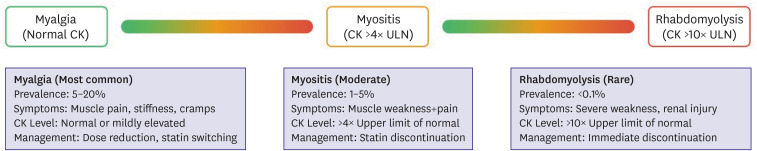
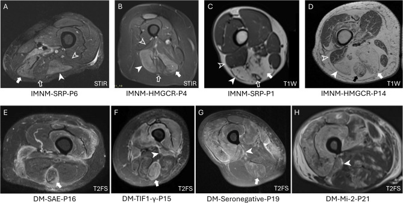
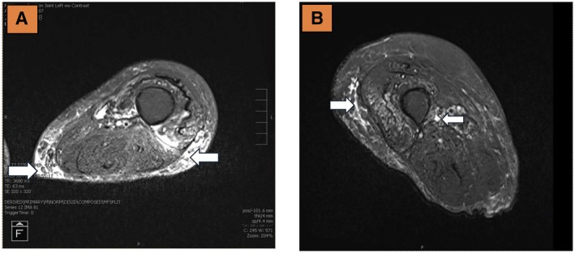
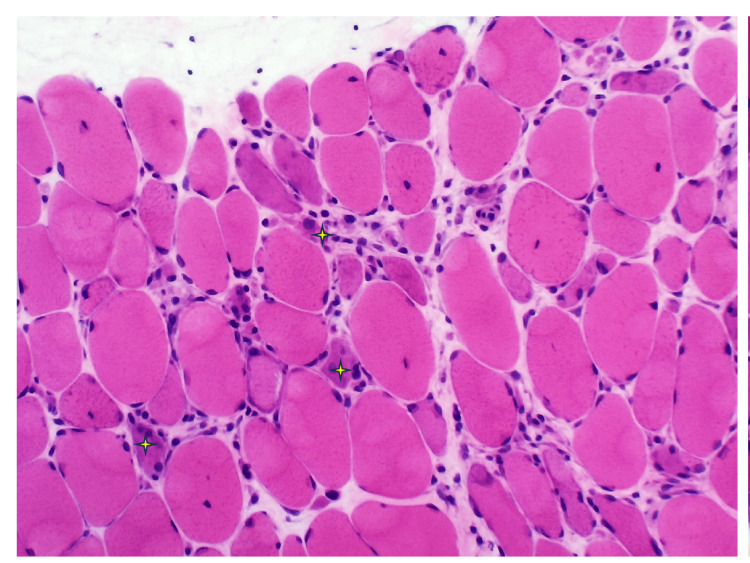

1685 — Bệnh cơ do statin & bệnh cơ hoại tử tự miễn / Statin-associated muscle symptoms & anti-HMGCR immune-mediated necrotizing myopathy
Tags: pattern:phu-co pattern:thay-mo-co pattern:yeu-co-goc-chi pattern:doi-xung vung:co vung:chi-duoi vung:chi-tren protocol:MRI-co protocol:STIR protocol:sinh-thiet-co protocol:EMG incidentaloma:khong
Mức chắc chắn (certainty): tổng hợp y văn (literature synthesis) — 1 đoàn hệ đa quốc gia 109 ca anti-HMGCR (Rheumatology 2025, PMC12407235, CC BY), 1 tổng quan có sơ đồ phổ bệnh và ngưỡng CK (Korean Circ J 2025, PMC12614426, CC BY-NC), 1 tổng quan hệ thống 88 nghiên cứu/~230 ca IMNM (Cureus 2025, PMC12743563, CC BY), 1 nghiên cứu MRI đùi so sánh IMNM với DM (BMC Rheumatol 2025, PMC12010673, CC BY-NC-ND), 1 tổng quan vai trò MRI trong bệnh cơ viêm (Front Immunol 2025, PMC11808160, CC BY), 1 meta-analysis 41 thử nghiệm/64.728 người (PMC12173554, CC BY) và 3 ca lâm sàng có ảnh (Clin Case Rep 2026, PMC13239778, CC BY-NC-ND; Cureus 2026, PMC13108367, CC BY; Cureus 2025, PMC12405958, CC BY). Không có ca nguyên văn của nhóm.
Câu chốt: đau cơ khi dùng statin hầu như không phải bệnh cơ viêm — nhưng một nhóm nhỏ lại là bệnh cơ hoại tử tự miễn do kháng thể kháng HMGCR, một bệnh khác hẳn về cơ chế, hình ảnh và điều trị. Ba con số phải thuộc: đa số người đau cơ có CK bình thường (myalgia 5–20%, CK bình thường); bệnh cơ thật (CK > 4 × ULN) chỉ 1–5%, tiêu cơ vân (CK > 10 × ULN) < 0,1%; và anti-HMGCR gặp 2,9 ca/triệu người–năm, tức 20,4–24,1 ca/triệu người dùng statin/năm, với CK đỉnh trung vị 7.020 U/L và chỉ 46,2% hồi phục sức cơ sau 2,3 năm.
1. Tổng quan bệnh học – cơ chế hình ảnh
1.1 Hai bệnh khác nhau nằm dưới cùng một triệu chứng
- Độc tính cơ trực tiếp (myotoxicity): statin ức chế HMG-CoA reductase → giảm mevalonate → giảm các isoprenoid (GGPP, FPP) → giảm prenyl hóa các GTPase nhỏ → rối loạn chức năng ty thể, tăng stress oxy hóa, giảm khả năng sửa chữa sợi cơ. Đây là tổn thương phụ thuộc liều, hồi phục sau ngừng thuốc, không có kháng thể.
- Bệnh cơ hoại tử tự miễn (immune-mediated necrotizing myopathy, IMNM): cơ chế miễn dịch dịch thể — statin làm tăng biểu hiện HMGCR trong sợi cơ tái tạo; cơ địa thuận lợi sinh kháng thể anti-HMGCR; kháng thể gắn enzyme trên màng sợi cơ → hoạt hóa bổ thể, hoại tử sợi cơ, rất ít tế bào lympho xâm nhập. Vì vậy mô bệnh là hoại tử + tái tạo, không phải "viêm cơ" điển hình.
- Điểm khác gốc: anti-HMGCR đặc hiệu cao cho IMNM và KHÔNG có ở người chỉ bị độc tính cơ do statin (PMC12407235). Nghĩa là một xét nghiệm máu tách được hai bệnh — nhưng chỉ làm khi có yếu cơ + CK tăng kéo dài, không làm sàng lọc tràn lan.
- Vì sao gọi là "hoại tử" trên MRI: sợi cơ hoại tử mất ổn định màng, nước vào nội bào và khoảng gian bào → phù cơ. Phù = tăng nước tự do → T2 dài → sáng trên STIR/T2 fat-sat; mỡ bị triệt tín hiệu trên STIR nên chỉ nước còn sáng. Ở giai đoạn muộn, sợi cơ chết được thay bằng mỡ → T1 ngắn → sáng trên T1, tối trên STIR — hai thì của cùng một quá trình: phù (hoạt động) → thay mỡ (di chứng).
- Vì sao MRI không đặc hiệu: phù cơ chỉ là "nước trong cơ", gặp ở vận động mạnh, chấn thương, thiếu máu, nhiễm trùng, chèn ép thần kinh, tiêu cơ vân; độ nhạy của MRI cho phù cơ trong bệnh cơ viêm 80–90%, nhưng độ đặc hiệu thấp (PMC11808160). Giá trị thật của MRI là phân bố cơ (gợi ý thể bệnh) và chọn chỗ sinh thiết.

*Ba mức của cùng phổ: đau cơ (myalgia) — CK bình thường, 5–20%; bệnh cơ/viêm cơ (myositis) — CK > 4 × ULN, 1–5%; tiêu cơ vân (rhabdomyolysis) — CK > 10 × ULN, < 0,1%, có tổn thương thận. Nguồn: Cha JJ, Hong SJ, Korean Circ J 2025 (PMC12614426), CC BY-NC.*1.2 Phân bố cơ trên MRI: "bản đồ" tách IMNM khỏi viêm da cơ
- Thang điểm hay dùng là Fischer cải biên: 0 bình thường, 1 < 30% thể tích cơ, **2** 31–75%, **3** > 75% — chấm trên 11 cơ đùi ở lát cắt ngang T1 (thay mỡ) và STIR/T2 fat-sat (phù).
- IMNM (14 bệnh nhân, PMC12010673): nặng nhất ở cơ bán màng (semimembranosus) 3,0 (2,7–3,0), đầu dài cơ nhị đầu đùi (biceps femoris long head, BF-LH) 2,7 (2,0–3,0), nhóm cơ khép 2,5 (2,0–3,0); spared: đầu ngắn cơ nhị đầu đùi (BF-SH) và cơ bán gân (semitendinosus). Tức khoang sau đùi + khoang khép.
- Viêm da cơ (DM, 11 bệnh nhân): nặng nhất ở cơ rộng giữa (vastus intermedius) 2,9, cơ rộng ngoài (vastus lateralis) 2,7, cơ rộng trong 2,3 — tức khoang trước (cơ tứ đầu); khác biệt có ý nghĩa ở 10/11 cơ (p < 0,01), chỉ cơ thẳng đùi là không (p = 0,19).
- Vì sao phân bố này quan trọng: cùng "yếu cơ gốc chi + CK cao", khoang sau đùi + cơ khép đẩy chẩn đoán về IMNM, khoang trước về DM — giúp chọn vị trí sinh thiết và ưu tiên xét nghiệm kháng thể trước khi làm thủ thuật.

So sánh trực tiếp. (A–D) IMNM: phù khoang sau và cơ khép trên STIR (A, B — mũi tên/đầu mũi tên), thay mỡ hoàn toàn cơ bán màng và BF-LH trên T1 ở bệnh kéo dài (C, D), BF-SH và cơ bán gân còn spared. (E–H) DM: phù khoang trước, cơ bán gân, BF-SH và mạc trên T2 fat-sat. Nguồn: Wilks AW et al., BMC Rheumatol 2025 (PMC12010673), CC BY-NC-ND — ảnh nguyên bản, không crop/ghép.1.3 Số liệu định lượng phải thuộc
| Đại lượng | Con số | Nguồn |
|---|---|---|
| Đau cơ do statin trong thử nghiệm ngẫu nhiên so với quan sát | ~5% (RCT) vs 10–20% (quan sát/registry); không dung nạp statin gộp ở > 4 triệu người: 9,1% | PMC12614426 |
| Phổ bệnh: myalgia / myopathy / rhabdomyolysis | 5–20% (CK bình thường) / 1–5% (CK > 4 × ULN) / **< 0,1%** (CK > 10 × ULN + tổn thương thận) | PMC12614426 |
| Meta-analysis 41 RCT, 64.728 người | CK < 3 × ULN: 0,43% (0,11–0,75); bệnh cơ cao hơn với simvastatin 80 mg; tiêu cơ vân phụ thuộc liều (p < 0,01) | PMC12173554 |
| Thời gian cải thiện triệu chứng sau ngừng statin | 1–2 tuần (đa số), một số kéo dài hơn | PMC12614426 |
| Anti-HMGCR IMNM — tỉ lệ mắc | 2,9 ca/triệu người–năm; 20,4 (Anh) – 24,1 (Úc)/triệu người dùng statin/năm | PMC12407235 |
| Đoàn hệ 109 ca: tuổi, giới, thời gian theo dõi | trung vị 66 tuổi (58–72,2); nữ 51%; theo dõi 2,3 năm (1,5–4,2) | PMC12407235 |
| Phơi nhiễm statin | 101/109 = 92,7%; atorvastatin 76,2% (77/101); thời gian dùng trung vị 3 năm (1 tháng–23 năm) | PMC12407235 |
| Nhóm chưa từng dùng statin | 8/109 = 7,5%; trẻ hơn (46,1 vs 67 tuổi, p = 0,02); nhiều người không phải da trắng (5/8 vs 20/77, p = 0,04); nuốt khó 4/8 vs 14/94 (p = 0,03) | PMC12407235 |
| CK đỉnh trung vị | 7.020 U/L (964–39.076) | PMC12407235 |
| Điều trị và kết cục sau 2,3 năm | IVIG 45,7% (48/105); CK bình thường chỉ 47,6% (50/105); sức cơ bình thường chỉ 46,2% (48/104) | PMC12407235 |
| Tổng quan 88 nghiên cứu (~230 ca) | tái phát 25–35%; rituximab đạt lui bệnh 60–70% ở ca khó trị | PMC12743563 |
| MRI: độ nhạy phát hiện phù cơ trong bệnh cơ viêm | 80–90%, độ đặc hiệu thấp | PMC11808160 |
| Thang Fischer cải biên (11 cơ đùi) | 0 bình thường · 1 < 30% · **2** 31–75% · **3** > 75% | PMC12010673 |
| IMNM: 3 cơ nặng nhất (trung vị [IQR]) | cơ bán màng 3,0 (2,7–3,0) · BF-LH 2,7 (2,0–3,0) · cơ khép 2,5 (2,0–3,0) | PMC12010673 |
| DM: 3 cơ nặng nhất | cơ rộng giữa 2,9 (2,2–3,0) · cơ rộng ngoài 2,7 (2,3–3,0) · cơ rộng trong 2,3 (1,7–2,7) | PMC12010673 |
| Khác biệt giữa IMNM và DM | có ý nghĩa ở 10/11 cơ (p < 0,01); cơ thẳng đùi không (p = 0,19) | PMC12010673 |
| Ca anti-HMGCR điển hình: CK lúc vào | 9.460 U/L (nữ 70 tuổi), đáp ứng rituximab | PMC13249640 |
2. Mẫu hình + chẩn đoán phân biệt theo vị trí (Gamut)
- Cách đọc: trả lời 4 câu trước khi gọi tên: (1) phù cơ đối xứng hai bên hay một bên? (2) khoang nào — trước, sau, khép, mông? (3) có thay mỡ/teo (mạn) hay chỉ phù (hoạt động)? (4) có tổn thương mạc (fascia) hay không?
- Gamut theo vị trí:
- Khoang sau đùi (bán màng, BF-LH) + cơ khép, spared BF-SH và bán gân → IMNM (anti-HMGCR/anti-SRP); cũng gặp ở viêm đa cơ (PM) nhưng ít đặc trưng hơn.
- Khoang trước (tứ đầu) + mạc + cơ bán gân/BF-SH → viêm da cơ (DM).
- Tứ đầu + cơ gấp cổ tay, không đối xứng, người > 50 tuổi → viêm cơ thể vùi (IBM) — teo nhiều hơn phù, không đáp ứng corticoid.
- Một bên, đau nhiều, phù lan ra mô dưới da → viêm cơ khu trú, áp-xe, nhồi máu cơ, chèn ép thần kinh.
- Teo + thay mỡ lan tỏa, không phù → bệnh cơ do corticoid, bất động, suy dinh dưỡng, IMNM mạn; CK bình thường hoặc chỉ tăng nhẹ.
- Phù cơ lan tỏa + CK rất cao + suy thận → tiêu cơ vân (statin liều cao + tương tác thuốc, động kinh, nhiễm trùng, hội chứng chèn ép).
3. Bảng so sánh phân biệt (ma trận đối chiếu)
| Thực thể (entity) | Hình ảnh điển hình (MRI đùi T1 + STIR) | Chốt vào (rule-in) | Chốt loại (rule-out) | Gợi ý xác nhận |
|---|---|---|---|---|
| Đau cơ do statin (myalgia) | MRI bình thường hoặc phù nhẹ, rải rác, không theo khoang | Triệu chứng cơ khi dùng statin, CK bình thường, hết sau 1–2 tuần ngừng thuốc | CK > 4 × ULN kéo dài hoặc yếu cơ khách quan → không phải myalgia đơn thuần | Ngừng statin 2–4 tuần, đánh giá lại; không cần MRI |
| Bệnh cơ do statin (độc tính) | Phù nhẹ, đối xứng, rải rác, có thể bình thường; không thay mỡ | CK tăng khi dùng statin, giảm sau ngừng; không có kháng thể | CK vẫn cao + yếu cơ tiến triển sau 4 tuần → nghĩ IMNM | CK trước/sau ngừng; anti-HMGCR nếu không hồi phục |
| IMNM do anti-HMGCR | Phù khoang sau đùi + cơ khép (bán màng 3,0; BF-LH 2,7), spared BF-SH/bán gân; mạn: thay mỡ các cơ đó | Yếu cơ gốc chi tiến triển + CK rất cao (trung vị ~7.000 U/L) + anti-HMGCR dương | Anti-HMGCR âm (nhưng 10–12% IMNM không có kháng thể) và CK bình thường → ít khả năng | Anti-HMGCR (ELISA), CK, sinh thiết có hoại tử + MHC-I |
| Viêm da cơ (DM) | Phù khoang trước + mạc (rộng giữa 2,9; rộng ngoài 2,7); ban da, yếu cơ gốc chi | Ban Gottron/heliotrope + yếu cơ gốc chi + CK tăng; phù mạc trên STIR | Không có tổn thương da + phân bố khoang sau → nghĩ IMNM | Kháng thể myositis (Mi-2, MDA5…); sinh thiết có viêm quanh mạch + teo quanh thùy |
| Viêm đa cơ (PM) | Phù đối xứng, có thể khoang sau như IMNM nhưng có xâm nhập lympho | Yếu cơ + CK tăng + sinh thiết có lympho CD8+ xâm nhập sợi cơ | Hoại tử nhiều mà rất ít lympho → IMNM, không phải PM | Sinh thiết; anti-HMGCR/SRP âm |
| Viêm cơ thể vùi (IBM) | Teo + thay mỡ tứ đầu và cơ gấp cổ tay, không đối xứng, phù ít | Yếu tứ đầu + gấp ngón, tuổi > 50, CK < 10 × ULN, không đáp ứng corticoid | CK rất cao + phù khoang sau đối xứng → không phải IBM | EMG, sinh thiết (viêm quanh nội mạc, không hoại tử) |
| Bệnh cơ do tuyến giáp | Phù cơ nhẹ, đối xứng; có thể phì đại cơ | TSH cao + CK tăng + yếu cơ, hồi phục khi bù giáp | TSH bình thường | TSH/FT4 trước khi quy mọi CK cao cho statin |
| Bệnh cơ do corticoid | Teo + thay mỡ, không phù, hay ở tứ đầu và cơ mông | Dùng corticoid kéo dài + yếu cơ gốc chi + CK bình thường | CK tăng mạnh + phù cơ → không phải do corticoid | Ngừng/giảm corticoid thử; MRI không có phù |
- Không tạo ảnh ghép cho bài này: các ảnh khác bệnh nhân và khác chuỗi xung; hai ảnh
CC BY-NC-NDphải giữ nguyên bản.
4. Protocol chụp + hệ phân độ/điểm chuẩn hóa
4.1 Protocol MRI cơ
- Vị trí: đùi hai bên (từ gai chậu trước trên đến khớp gối), thêm mông/đai vai nếu yếu vùng đó; đặt cùng một tư thế, cùng mặt phẳng để so sánh phải–trái.
- Chuỗi xung tối thiểu:
- T1 mặt phẳng cắt ngang (không fat-sat) — thay mỡ, teo, mất mặt phẳng mỡ; đây là chuỗi bắt buộc để chấm điểm mạn.
- STIR hoặc T2 fat-sat mặt phẳng cắt ngang — phù cơ, phù mạc; STIR ưu tiên vì triệt mỡ đồng đều và nhanh (PMC11808160).
- Lát cắt 4–5 mm, khoảng cách 0–1 mm; trường nhìn đủ cả hai đùi.
- Không cần gadolinium cho mục đích phát hiện phù/hoại tử; không dùng gadolinium ở bệnh nhân suy thận nặng (nguy cơ xơ hóa hệ thống do gadolinium).
- Chấm điểm: Fischer cải biên 0–3 cho 11 cơ đùi (rộng ngoài, rộng giữa, rộng trong, thẳng đùi, may, bán màng, bán gân, nhị đầu đùi dài/ngắn, khép dài, khép ngắn) trên từng chuỗi; ghi phù và thay mỡ riêng.
4.2 Quy trình chẩn đoán và ngưỡng xử trí
flowchart TD
A[Triệu chứng cơ khi dùng statin] --> B[Đo CK, TSH, aldolase, AST/ALT]
B --> C{CK tăng trên 4 lần ULN?}
C -->|Không| D[Myalgia: giảm liều hoặc đổi statin, theo dõi 1 đến 2 tuần]
C -->|Có| E[Yếu cơ khách quan?]
E -->|Không| F[Bệnh cơ nhẹ: ngừng statin 2 đến 4 tuần, đo lại CK]
E -->|Có| G[Ngừng statin + anti-HMGCR + MRI đùi T1 và STIR]
G --> H{Anti-HMGCR dương?}
H -->|Có| I[IMNM: corticoid 1 mg/kg + IVIG hoặc ức chế miễn dịch - KHÔNG dùng lại statin]
H -->|Không| J{CK về bình thường sau 4 tuần?}
J -->|Có| K[Độc tính cơ do statin - thử statin khác liều thấp]
J -->|Không| L[Sinh thiết cơ tại vị trí phù trên STIR]
L --> M[Hoại tử nhiều, ít lympho, MHC-I dương = IMNM]
- Ngưỡng CK theo hội chứng: < 4 × ULN** — myalgia/bệnh cơ nhẹ; **> 4 × ULN — bệnh cơ; > 10 × ULN — tiêu cơ vân, phải ngừng statin ngay, bù dịch, theo dõi thận (PMC12614426).
- Ngưỡng thời gian: triệu chứng điển hình cải thiện 1–2 tuần sau ngừng; CK không giảm sau 4 tuần là cờ đỏ cho IMNM (khuyến cáo thực hành, xây từ kết cục của PMC12407235).
- Điều trị IMNM (không có RCT): prednisone 1 mg/kg/ngày ± IVIG (dùng ở 45,7% đoàn hệ) → giảm liều chậm; methotrexate/azathioprine/mycophenolate tiết kiệm corticoid; rituximab cho ca khó trị (lui bệnh 60–70%); tái phát 25–35% khi giảm liều (PMC12743563).
- Không dùng lại statin ở IMNM — khác với độc tính cơ, nơi đổi statin/giảm liều là lựa chọn hợp lý.
5. Biến thể bình thường và cạm bẫy
- CK bình thường không loại trừ đau cơ do statin: đa số myalgia có CK bình thường (PMC12614426) — chẩn đoán dựa triệu chứng + diễn biến khi ngừng/thử lại, không dựa CK.
- MRI bình thường không loại trừ bệnh cơ: ca PMC12880835 có T1 đai vai giữ nguyên khối cơ và tín hiệu đồng nhất dù bệnh nhân bị IMNM; phù có thể khu trú hoặc đã qua giai đoạn cấp. Luôn chụp cả đùi và cả hai bên, đừng chỉ chụp vùng đau.
- Tăng AST/ALT bị đọc là "bệnh gan": AST và ALT có nguồn gốc cơ; ca PMC12880835 được theo dõi tăng transaminase kéo dài trước khi phát hiện IMNM. CK + aldolase phải nằm trong bộ xét nghiệm gan "không rõ nguyên nhân".
- IMNM không cần statin: 7,5% ca chưa từng dùng statin, trẻ hơn và thường không phải da trắng (PMC12407235) — không có tiền sử statin không loại trừ IMNM.
- Bệnh cơ do corticoid vs IMNM: cả hai teo + thay mỡ; khác ở phù (IMNM còn hoạt động) và CK (corticoid: bình thường; IMNM: rất cao).
- Sinh thiết sai chỗ: lấy vào cơ đã thay mỡ hoàn toàn sẽ chỉ thấy mỡ → âm tính giả. Chọn cơ có phù trên STIR nhưng chưa thay mỡ hoàn toàn, ưu tiên khoang sau đùi ở IMNM.
- Satisfaction of search: đã thấy "statin" trong bệnh án rồi ngừng tìm nguyên nhân khác — luôn loại suy giáp, thiếu vitamin D, bệnh cơ di truyền, bệnh thần kinh ngoại biên (1641).

STIR lát cắt ngang hai cẳng chân của bệnh nhân IMNM do statin: tăng tín hiệu lan tỏa trong các khoang cơ (mũi tên) — phù cơ đang hoạt động. (A) so với (B) cho thấy mức độ không hoàn toàn đối xứng, điều hay gặp trong thực tế. Nguồn: Shrestha N, Hassan A, Evans JA, Clin Case Rep 2026 (PMC13239778), CC BY-NC-ND — ảnh nguyên bản, không crop/ghép.6. Tự lượng giá — Blind Quiz ngay trên trang tĩnh
Ca 1 — Nam 68 tuổi, atorvastatin 40 mg 4 năm, 6 tuần nay yếu cơ đùi, không đau, không sốt. CK 8.900 U/L, AST 210 U/L, ALT 160 U/L. MRI cẳng chân dưới đây (STIR).
- Gợi ý lâm sàng: yếu cơ gốc chi tiến triển, men gan tăng nhẹ, không vàng da.
- Câu hỏi: Mô tả phân bố phù. Vì sao men gan tăng? Ba chẩn đoán phân biệt và xét nghiệm nào tách được chúng?
Bấm để hiện đáp án (findings + chẩn đoán)
- Dấu hiệu: tăng tín hiệu STIR lan tỏa trong các khoang cơ cẳng chân/đùi, mức độ không hoàn toàn đối xứng; không có khối, không có ổ dịch.
- Chẩn đoán: bệnh cơ hoại tử tự miễn do anti-HMGCR (thể do statin).
- Vì sao men gan tăng: AST/ALT có nguồn gốc cơ — phải đo CK và aldolase trước khi quy cho gan.
- Phân biệt: độc tính cơ do statin (CK giảm sau ngừng), viêm đa cơ (sinh thiết có lympho), bệnh cơ do suy giáp (TSH).
- Xét nghiệm tách: anti-HMGCR — đặc hiệu cao cho IMNM, không có ở độc tính cơ do statin (PMC12407235).
- Nguồn ảnh: Shrestha N et al., Clin Case Rep 2026 (PMC13239778), CC BY-NC-ND.
Ca 2 — Nữ 62 tuổi, yếu cơ đùi 3 tháng, CK 6.200 U/L, anti-HMGCR dương. Ảnh MRI đùi dưới đây gồm nhiều bệnh nhân.
- Câu hỏi: Hàng nào là IMNM, hàng nào là DM? Cơ nào nặng nhất ở mỗi thể? Hai cơ nào "spared" trong IMNM?
Bấm để hiện đáp án (findings + chẩn đoán)
- Dấu hiệu: (A–D) phù khoang sau (bán màng, BF-LH) và cơ khép → IMNM; (E–H) phù khoang trước (tứ đầu), cơ bán gân, BF-SH và mạc → DM.
- Cơ nặng nhất: IMNM — cơ bán màng 3,0 (2,7–3,0), BF-LH 2,7; DM — cơ rộng giữa 2,9, rộng ngoài 2,7.
- Sparing trong IMNM: đầu ngắn cơ nhị đầu đùi (BF-SH) và cơ bán gân — dấu hiệu phân biệt hữu ích.
- Ý nghĩa: phân bố này giúp chọn chỗ sinh thiết và ưu tiên xét nghiệm kháng thể trước thủ thuật.
- Nguồn ảnh: Wilks AW et al., BMC Rheumatol 2025 (PMC12010673), CC BY-NC-ND.
Ca 3 — Nam 55 tuổi, yếu cơ gốc chi + CK 5.000 U/L, anti-HMGCR dương. Sinh thiết cơ dưới đây (H&E).

- Câu hỏi: Mô tả bất thường chính. Có nhiều tế bào viêm không? Vì sao điều này quan trọng với chẩn đoán?
Bấm để hiện đáp án (findings + chẩn đoán)
- Dấu hiệu: kích thước sợi cơ thay đổi rõ, các sợi hoại tử (dấu sao), rất ít tế bào viêm quanh sợi cơ; nhuộm MHC-I dương ở nhiều sợi.
- Chẩn đoán: IMNM — hoại tử sợi cơ với xâm nhập lympho tối thiểu.
- Vì sao quan trọng: đây là điểm khác viêm đa cơ (lympho CD8+ xâm nhập sợi cơ) và viêm da cơ (teo quanh thùy, viêm quanh mạch); hoại tử nhiều + ít viêm là chìa khóa.
- Nguồn ảnh: Ong JT, Jamil TR, Loo SY, Cureus 2026 (PMC13108367), CC BY.
Ca 4 — Bệnh nhân đau cơ khi dùng rosuvastatin 10 mg, CK 210 U/L (ULN 190). Hình dưới đây là phổ bệnh cơ do statin.
- Câu hỏi: Bệnh nhân thuộc mức nào của phổ? Có cần ngừng statin vĩnh viễn không? Ngưỡng CK nào đổi thái độ xử trí?
Bấm để hiện đáp án (findings + chẩn đoán)
- Mức: myalgia — đau cơ không tăng CK đáng kể (CK 210 chỉ hơn 1 × ULN), không yếu cơ.
- Xử trí: giảm liều hoặc đổi statin, theo dõi 1–2 tuần; không ngừng vĩnh viễn.
- Ngưỡng đổi thái độ: > 4 × ULN → bệnh cơ, ngừng và đo lại; > 10 × ULN → tiêu cơ vân, ngừng ngay + bù dịch + theo dõi thận.
- Cạm bẫy: CK bình thường/ít tăng không loại trừ đau cơ do statin, và không được quy mọi đau cơ cho statin (đau cơ do nguyên nhân khác rất phổ biến).
- Nguồn ảnh: Cha JJ, Hong SJ, Korean Circ J 2025 (PMC12614426), CC BY-NC.
Bài liên quan chéo
- 1641 – OPMD, OPDM và CPEO: bệnh cơ di truyền & teo cơ mắt–hầu (phân biệt thoái hóa cơ với bệnh cơ viêm)
- 1615 – Di căn xương ở ung thư vú (đau xương–cơ ở người lớn tuổi, phân biệt với bệnh cơ)
- 370 – Nhiễm trùng cơ – xương – khớp (viêm cơ nhiễm khuẩn/áp-xe cơ — phân biệt với bệnh cơ viêm vô khuẩn)
- 375 – U phần mềm (khối mô mềm/teo cơ một bên — phân biệt với phù cơ đối xứng)
Ảnh
- 5 ảnh; nguồn và giấy phép từng ảnh trong
images/CREDITS.md. - CC BY-NC-ND (
MRI-T1,MRI-STIR,MRI-doi-chieu): dùng nguyên bản, không crop, không ghép, không đổi màu. - Không tạo composite: ba ảnh MRI thuộc ba bộ bệnh nhân khác nhau, chuỗi xung khác nhau; ghép sẽ gợi ý so sánh không có thật.
- Không có ảnh open-access của ca IMNM có tổn thương da/ban → bài không bịa ảnh, chỉ dùng ảnh MRI, mô bệnh và sơ đồ.
Không dùng để chẩn đoán độc lập khi chưa có người hướng dẫn.